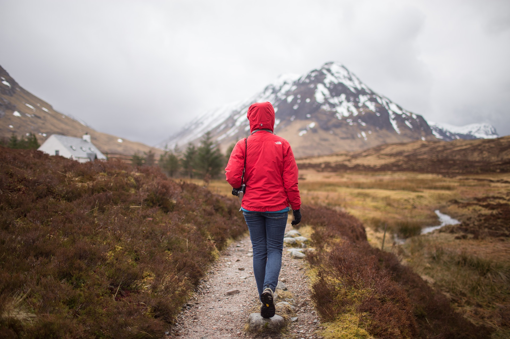
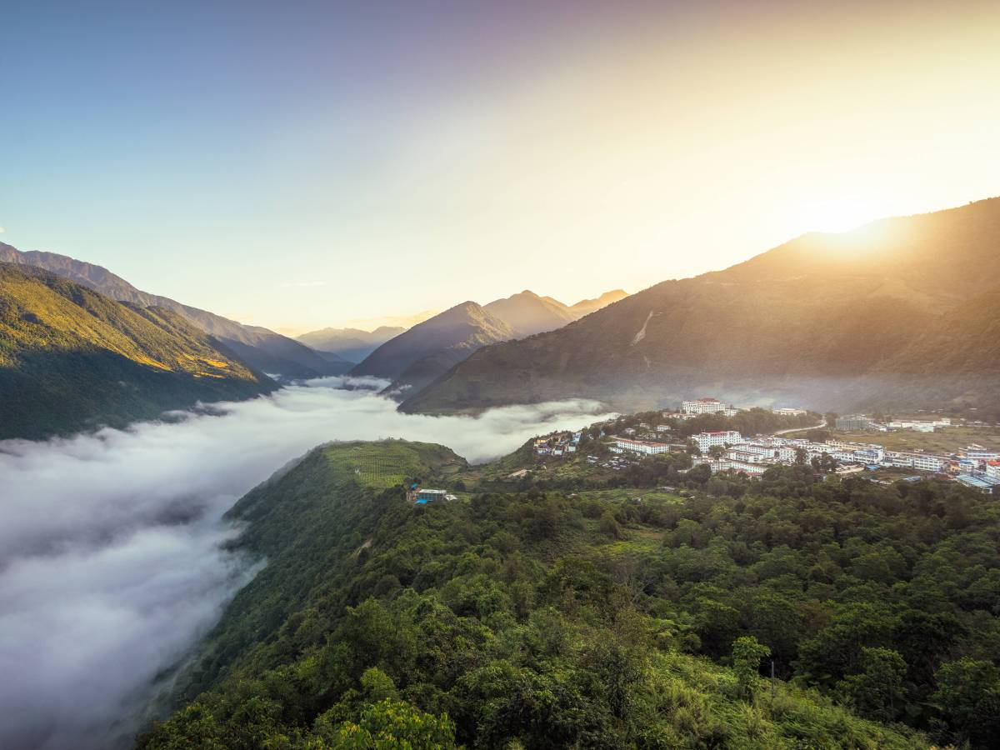
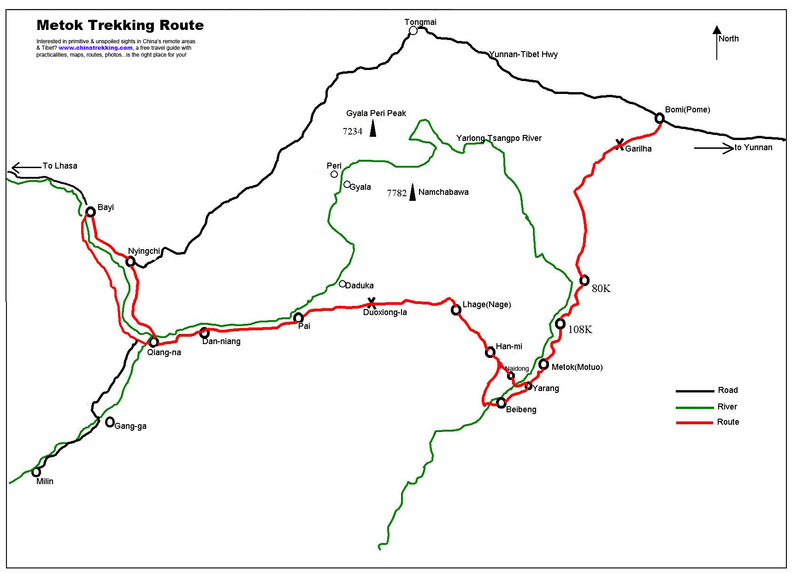
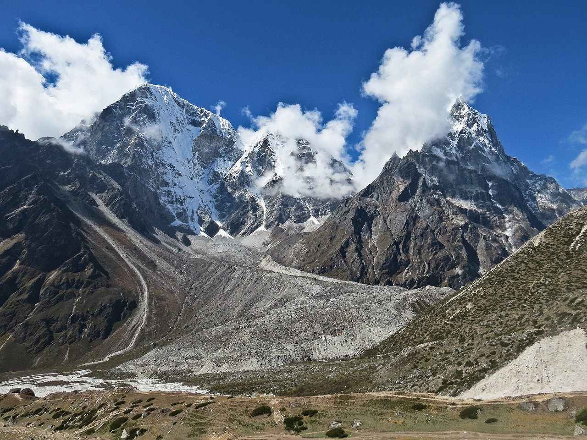
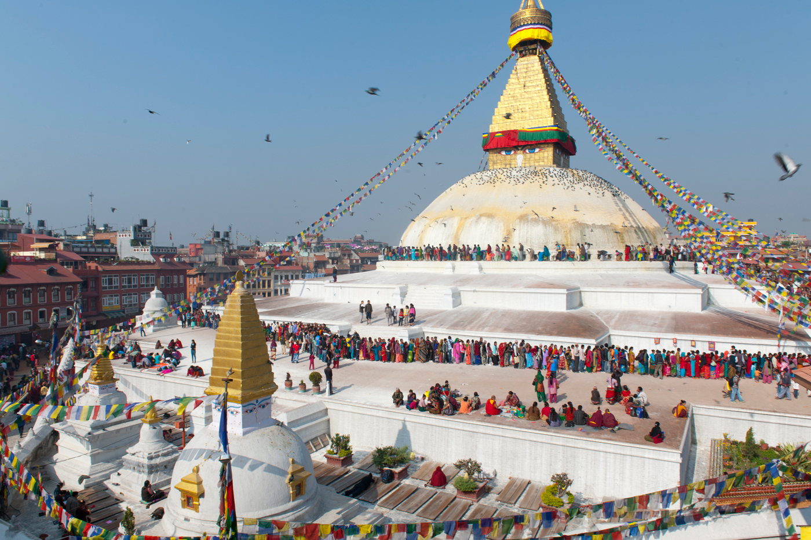
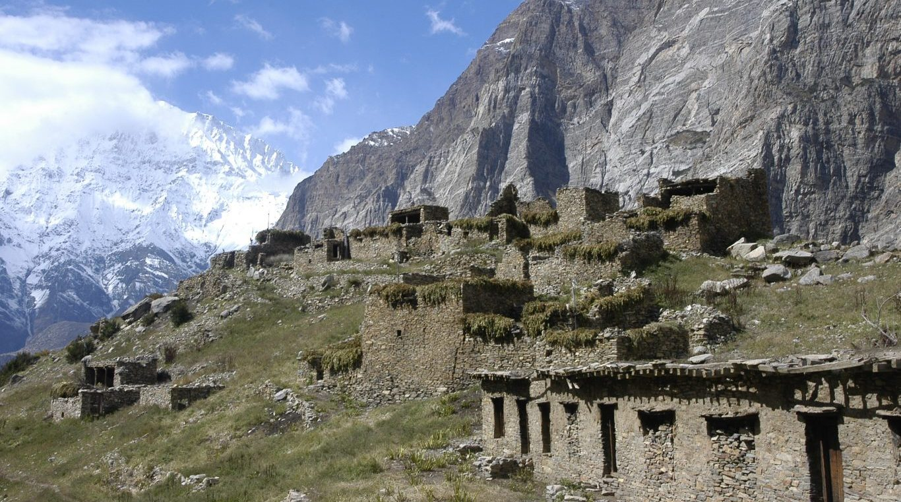

El senderisme o trekking és uns del principals atractius turistics del Tibet.

Motuo
Si hi ha un destí allunyat de tot i gairebé secret és Motuo, a l’est del Tibet. És l’únic comtat dels 2100 comtats que té tot Xina que no està unit mitjançant carretera amb la resta del món i és l’últim pel qual travessa el riu Bramahputra abans d’endinsar-se a l’Índia. Motuo significa “lotus ocult” i un nom mai ha estat millor lloc. És una destinació màgica i sagrada i com a tal molts tibetans van en peregrinació visitant algun dels molts llocs així que té aquest comtat, entre temples i muntanyes.
Motuo està a uns 4000 metres d’altura i l’envolten muntanyes nevades que actuen de frontera natural. El clima és estrany perquè mentre és ben humit també pot ser tan fred com l’Himàlaia. Hi ha glaceres, cascades, prats, boscos verges i muntanyes amb pics blancs eterns. Per això és que d’un temps ençà s’ha convertit en un gran destí de motxillers i aventurers. Caminar per aquí és una cosa que no té preu i la ruta de senderisme cap Motuo és un viatge de vida que requereix força i concentració però que al final brinda la millor de les satisfaccions.
La millor combinació és fer l’excursió i contractar un guia local, de l’ètnia Menba, perquè et guiï millor per aquí i et permeti conèixer realment Motuo. Això sí, has de fer la motxilla amb aigua i menjar com per a deu dies. Hi ha dos camins i en general s’opta per un per entrar i per l’altre per sortir. No convé anar entre desembre i juny, ja que hi ha molta neu així que convé esperar a mitjans de juny.
 El camp base de la muntanya Everest per cara nord, Tibet és el recorregut del viatge més apassionant sota la muntanya Everest. La regió més alta del món, emmurallat després de la línia de l’Himàlaia i sobre el vast altiplà tibetà. Es realitza la visita per la mítica ciutat de Lhasa al complet, el palau de Potala, barri de Barkhor i els monestirs Gelug més rellevants com Drepung, Sera i Jokhang. Finalment el el recorregut acaba al Camp Base de l’Everest. Hi ha vistes impressionants des de camp base de l’Everest de la Serralada Himalayica amb el Qomolangma (Everest), Cho Oyo, Makalu, Lhotse, entre d’altres.
Aquest viatge pel Regne de Mustang, és un tros perdut del Tibet en territori nepalès, que ens oferirà un escenari sense límits, ple de colors, temples inhòspits, formacions rocoses espectaculars i paisatges lunars, mantenint al llarg de la nostra travessia magnifiques vistes de la serralada de l’Himàlaia.
Al llarg d’aquest trekking entre valls i muntanyes, es visiten poblats tradicionals i ciutats com Chhuksang, Geling o El Manthang, la capital del regne de Mustang, que ens permetran descobrir una cultura mil·lenària i un entorn que no ha estat afectat pel turisme, ja que ara per ara, tenen un accés molt restringit. Com va dir el Dalai Lama: “L’autèntica cultura tibetana, sobreviu només a l’exili i en llocs únics com Mustang”.
El govern del Nepal continua facilitant la visita dels trekkeres i muntanyencs. D’aquesta manera, recentment s’ha obert la zona de Nar - Phu per als trekkeres una de les últimes zones obertes a la presència d’estrangers.
El nostre destí és la vall Nar-Phu, sobre el límit dels arbres i camps de cultius, al nord del Manang. S’arriba després de travessar un turó que separa la vall Nar amb Manang, travessant també pobles Bhotia sota Nyershang. La major part de la població són Bhotia i viuen del negoci de la sal i del pastós de iac. A més del Kangla que separa la vall de Nar i la vall de Nyeshang, la ruta més directa de Katmandú a Nar i Phu és per la ribera de Riu Marshyangdi. Els excursionistes caminen per les estribacions de l’Himàlaia.
